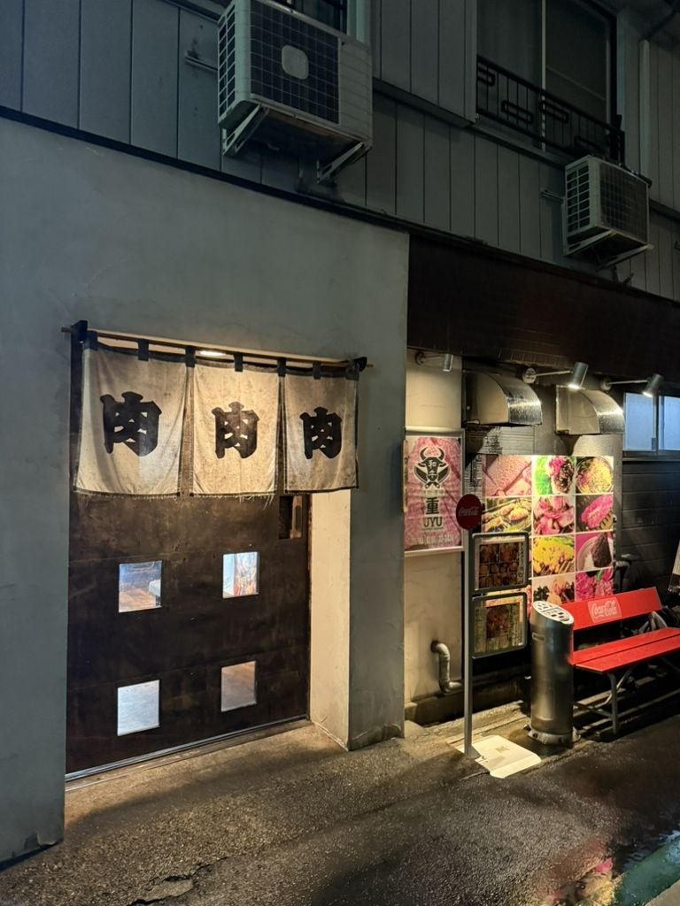
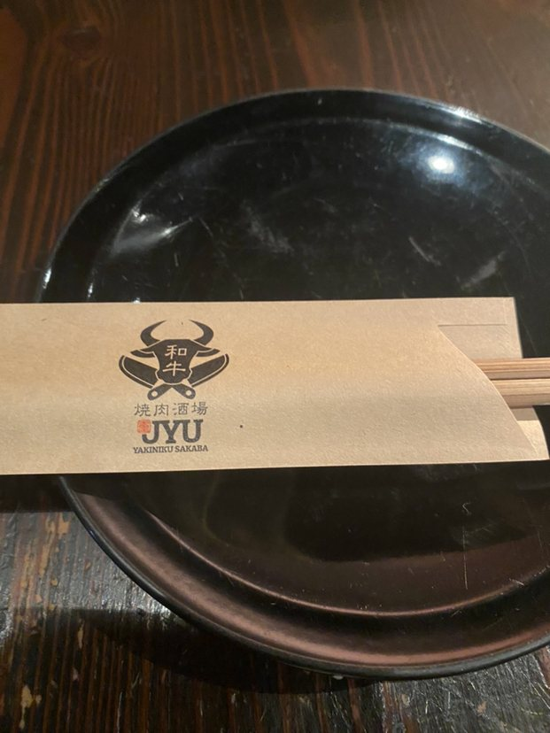
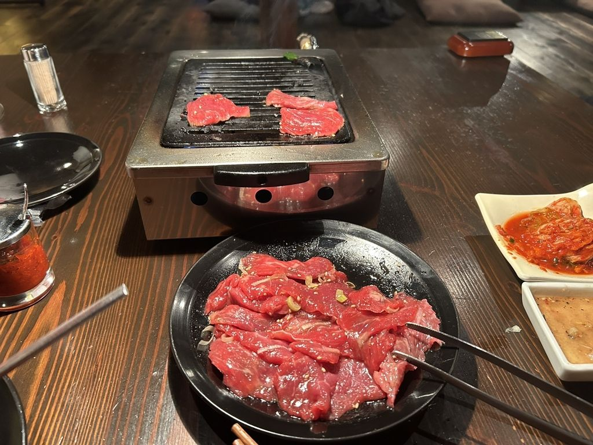
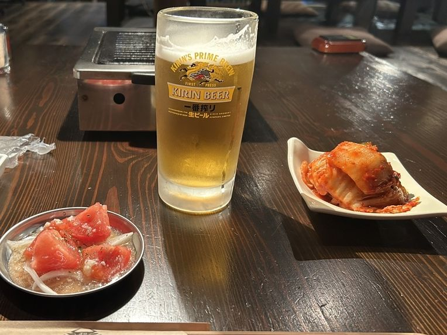
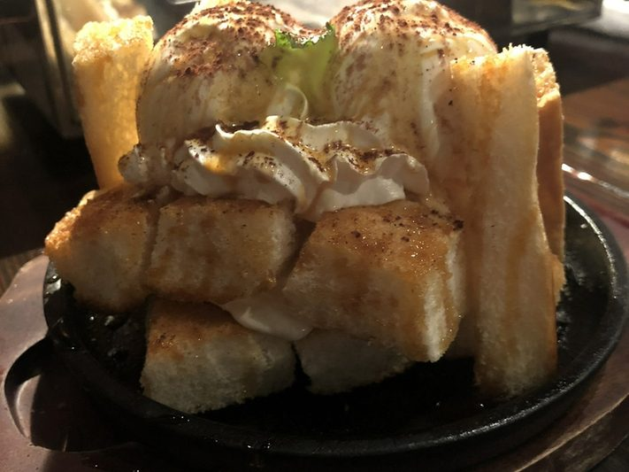
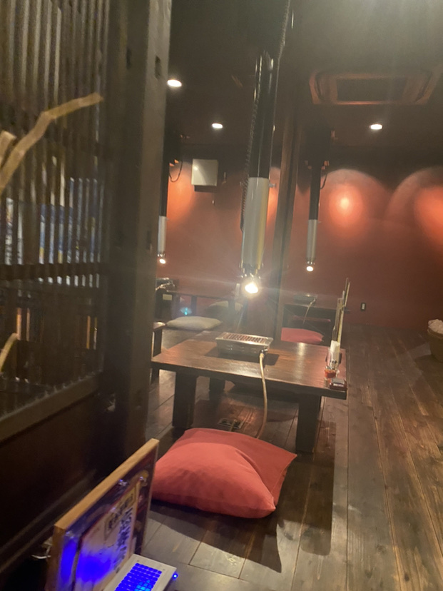
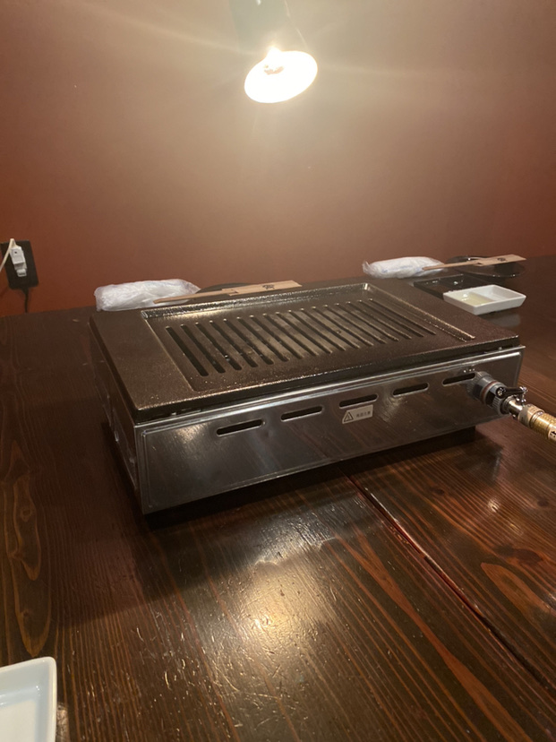
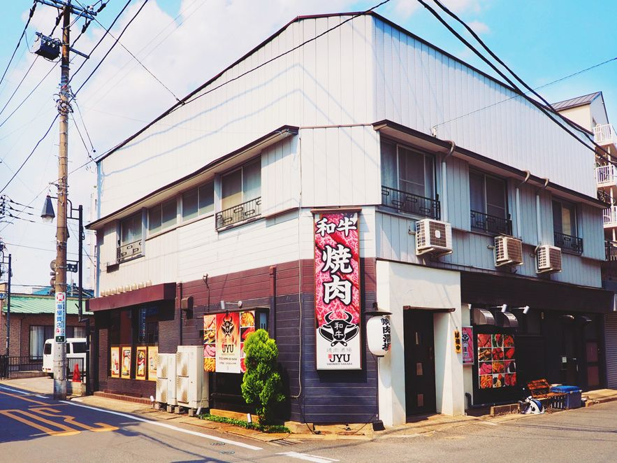

古河駅東口・焼肉酒場
昼は焼肉定食から、夜はもう一杯まで承ります

肉で終わらせたくないから、焼肉酒場と名づけて、
楽しく、活気あふれる場になってほしい
その想いをこめて、店名の重に、焼肉酒場という名前を冠しました
肉を焼いて、食べて、それで終わりにしないで、
そのあとの一杯まで、甘いものまで、
どうかごゆっくりなさってください

子供の頃に食べた、忘れられない味はございますか
私にとって、それが焼肉でした
幼い頃、叔父の焼肉屋で、これも美味いぞ、食え、と
たくさん食べさせてもらった記憶が、この店の始まりです
今度は私が、皆さまにお出しする番だと思い、
肉は黒毛和牛を厳選してご用意しております

「お肉がどれもめちゃくちゃ美味しいです。カルビがとろけるようで大満足でした。」
お客様の声より
「肉厚で驚きました。どの肉も厚くて柔らかい。駅近なのでとても行きやすいです」
お客様の声より
店長の私は、以前カフェバーで働いておりました
その経験をこの店に持ち込んで、お飲みものと甘いものを充実させています
焼肉を楽しむからといって、肉だけにこだわればいいとは思わないのです
お飲みものは90品あまり、カクテルだけでもおよそ30種
肉のための黒ワインや、肉のためのサワーもご用意して、
最初の一杯から、肉のあとのもう一杯まで承ります

「お酒のメニューも沢山あって満足度の高いお店です。」
お客様の声より
肉のあとの一皿まで、当店の仕事です
アイスクリームに、シャーベット、
そしてデザートのキャラメルハニーパンまでご用意しております

「デザートのキャラメルハニーパンは食べたら虜になるでしょう、、、笑」
お客様の声より
昼も焼肉をお出ししております
営業時間 11:00〜14:00
焼肉定食に、カルビ丼、曜日ごとの日替わりランチをご用意しております
日曜の昼は、お問い合わせください
歓送迎会や忘年会に、飲み放題つきのコースを承っております
ご人数やご予算のことは、お電話でご相談ください
「いつも会社の歓送迎会などで利用しています。」
お客様の声より
座敷席とテーブル席をご用意しております
おひとりでの一杯から、会社のお集まりまで、
ご人数に合わせてお席を整えますので、どうぞご相談ください


「店内は落ち着いた雰囲気で、焼肉もとても美味しかったです。上品な焼肉店、といった所でしょうか。」
お客様の声より
古河駅の東口から、歩いて3分ほどです
ご予約はお電話で承ります
お車でお越しの際は、近隣のコインパーキングをご利用いただき、
お帰りにパーキングチケットをお渡ししております

| 住所 | 〒306-0011 茨城県古河市東1-5-1 |
|---|---|
| 電話 | 0280-33-3434 |
| 営業時間 | 11:00〜14:00／17:00〜23:00（L.O. 22:30） |
| 定休日 | 水曜日 |
| 席数 | 座敷席・テーブル席（人数はご相談ください） |
| 駐車場 | 近隣のコインパーキングをご利用ください（お帰りにパーキングチケットをお渡しします） |
| お支払い | 現金・クレジットカード（AMEX）・PayPay |
肉で終わらない夜のために、当店は今日も、焼肉酒場です。
0280-33-3434｜ご予約はこちら